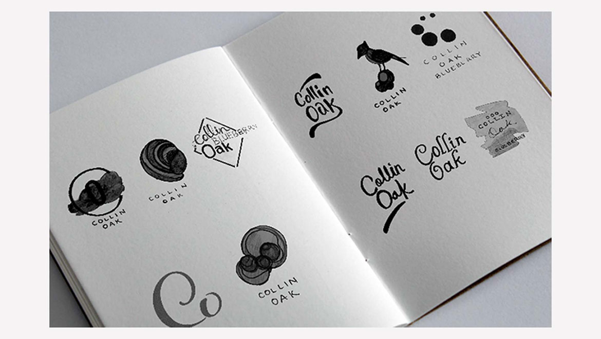
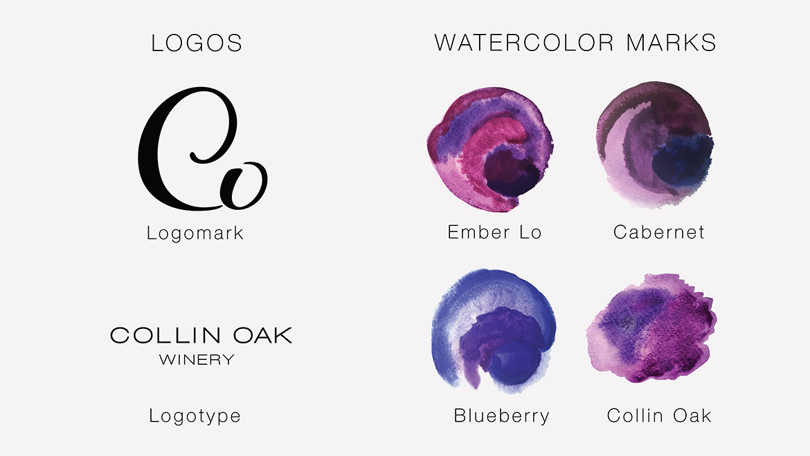
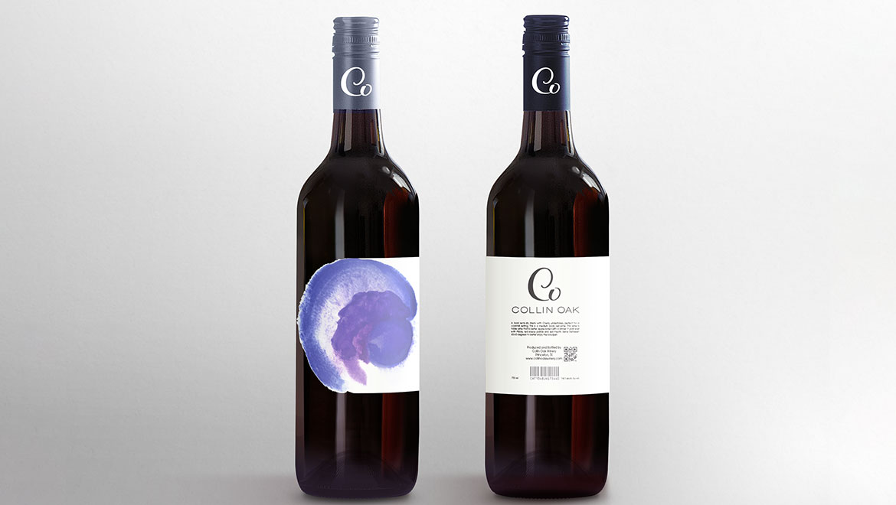
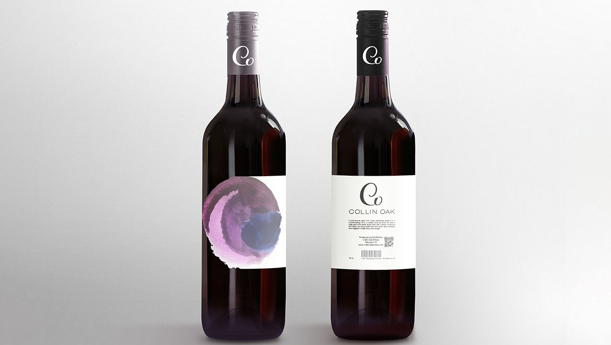

Collin Oak Winery
Watercolor, lettering and a coordinated print system
An identity that lets expressive artwork and a clear hierarchy work together: each wine gets its own watercolor mark, while one logo and type system ties labels, event print and the website into a family.
Visual craft across physical formats
Lettering, color and typographic hierarchy create a coherent identity across labels, packaging, signage and event materials.

Handcrafted, but unmistakably one family.
A small Texas winery needed an identity ready for its first big public tasting. The wines were made in small batches and by hand; the brand had to feel the same, while still giving each bottle a clear, shelf-ready hierarchy.
- Distinguish each wine at a glance, without a separate design per label
- Connect labels, event print and the website into one family
- Stay legible on a bottle, a banner and a phone screen
From a page of sketches to a two-letter monogram.
I explored oak leaves, birds and barrels before landing on lettering alone. The interlocking C and O carries the personality; the spaced capitals underneath carry the clarity.
Sketch
Dozens of pencil and brush-pen thumbnails.
Narrow
Pictorial ideas dropped for lettering.
Refine
The C–O ligature redrawn and vectorized.
Pair
Monogram locked up with a quiet logotype.


One label, four watercolor stories.
Every bottle shares the same white label, logo and type. Only the watercolor mark changes, so a shopper can tell the wines apart from across the room. Choose a mark.
Ember Lo
A warm magenta wash with the most pigment at its center, like a glow. The brightest mark in the family, made for the front of the shelf.
Cabernet
Violet layered over violet with hard, dried edges. Denser and darker, to signal the fuller red.
Blueberry
Indigo bleeding into lavender, the coolest mark. It keeps the fruit wine clearly apart from the grape varietals.
Collin Oak
The house mark: a loose, splattered blend of all three colors, used on the signature bottle, banners and event pieces.



Expressive art, precise specs.
Watercolor is unpredictable; production can’t be. Each brand color is specified for screen, print and spot color so labels, banners and the website match. Select a color to copy it.

Display: Disco
Widely tracked capitals for the logotype and headlines, echoing the airy spacing of the monogram.
Text: Helvetica Neue
Neutral and readable at label sizes, so the watercolor stays the hero.
From the tasting room to the phone.
The same marks scale up to hanging banners and down to a mobile homepage, each one choosing which wine to lead with. These are presentation mockups from the original project.

Taste of Texas banner
A tall format where the house mark becomes the focal point and the event details sit in a simple stack below. Readable from across a crowded hall.

Table setting & website
Branded plates and a website where the three wine marks become navigation: pick a color, see the wine.

Mobile homepage
The monogram and three marks fit one screen, keeping the shelf hierarchy intact in a 375-pixel column.